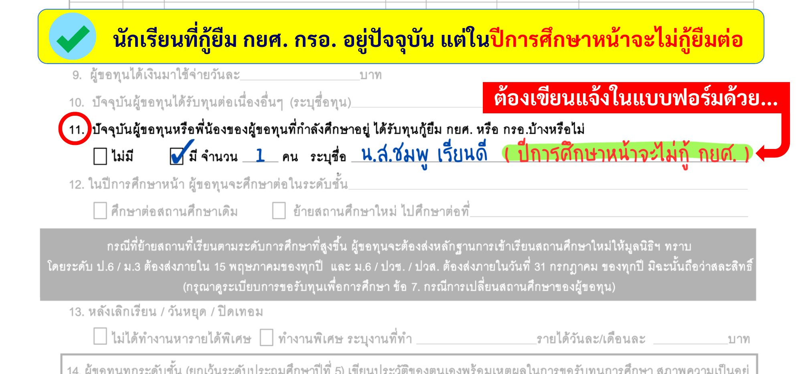
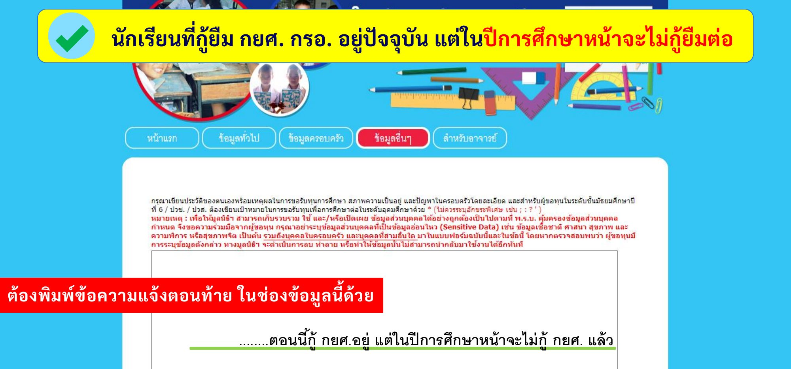
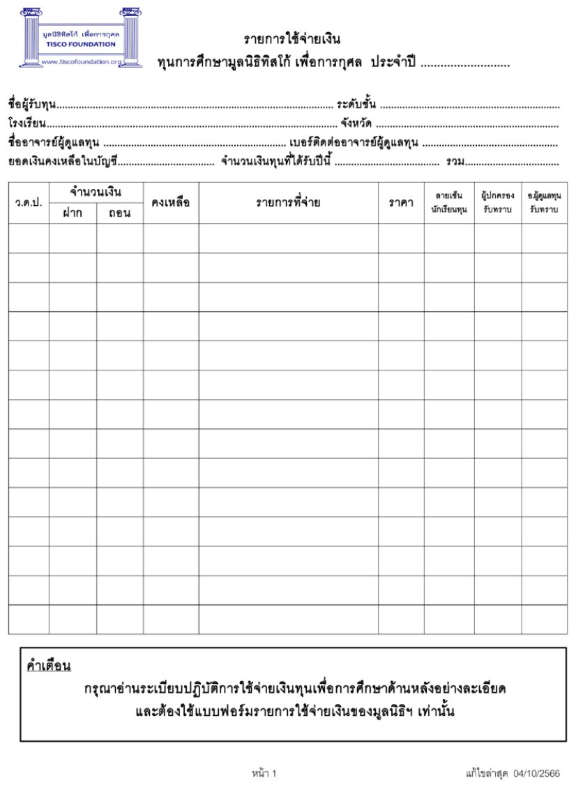
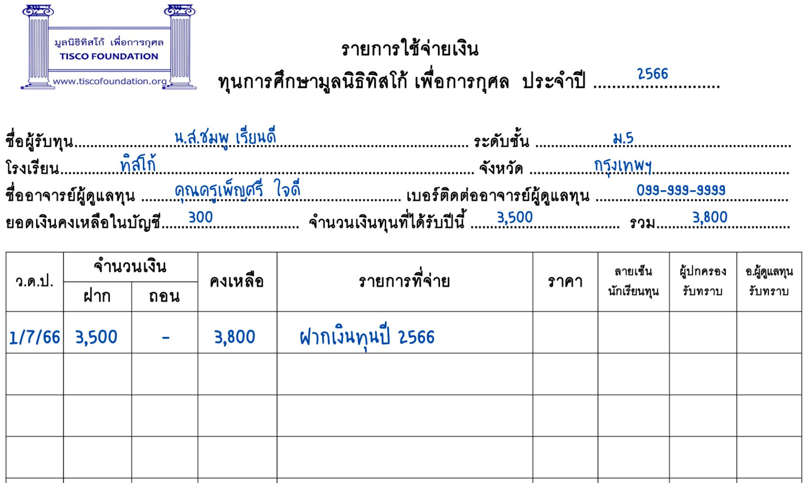
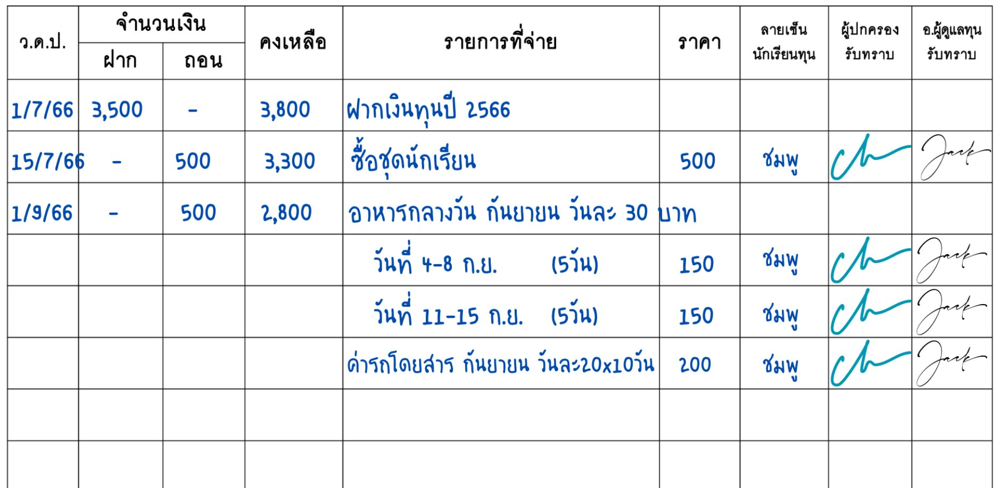
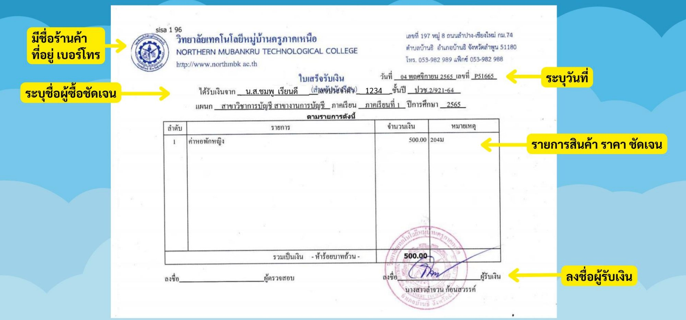
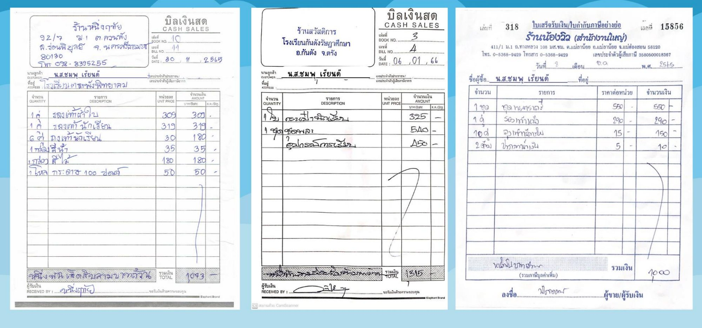
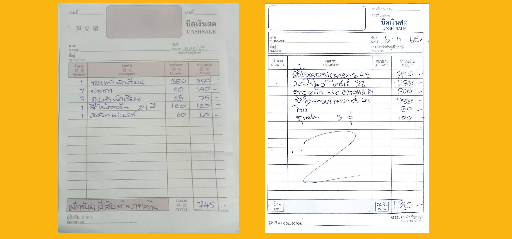
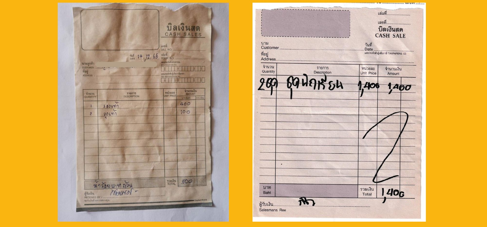
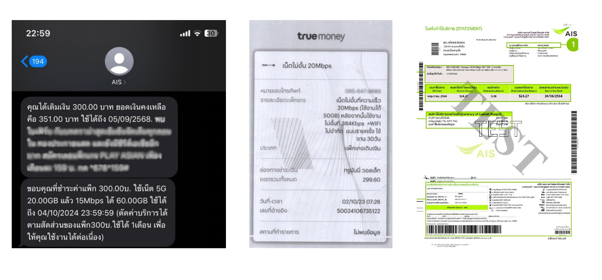

TISCO FOUNDATION
มูลนิธิทิสโก้ เพื่อการกุศล
คู่มือสำหรับ
สถานศึกษา
เพื่อใช้ชี้แจงให้นักเรียนทุน
TISCO Foundation
กำหนดการ2 / 26
A นักเรียนเรียนต่อสถานศึกษาเดิม
รอบปกติ
11 พ.ย. – 31 ม.ค.สมัครขอรับทุน (ทุนใหม่ + ทุนต่อเนื่อง)
2ก.พ. – เม.ย.มูลนิธิพิจารณาใบสมัคร
3มิถุนายนประกาศรายชื่อผู้ได้รับทุนรอบแรก
4กรกฎาคมมูลนิธิส่งตั๋วแลกเงินไปที่สถานศึกษา
กำหนดการ3 / 26
B นักเรียนที่แจ้งย้ายสถานศึกษา
รอบรอฟังผล
11 พ.ย. – 31 ม.ค.สมัครขอรับทุน (ทุนใหม่ + ทุนต่อเนื่อง) และกรอกในใบสมัครว่าปีการศึกษาหน้าจะย้ายสถานศึกษา
2มี.ค. – 31 ก.ค.ส่งหลักฐานยืนยันการย้ายให้มูลนิธิ
3ส.ค. – ต.ค.มูลนิธิพิจารณาทุนรอบรอฟังผล (เฉพาะผู้ส่งหลักฐานแล้ว)
4พฤศจิกายนประกาศรายชื่อผู้ได้รับทุนรอบรอฟังผล
5ธันวาคมมูลนิธิส่งตั๋วแลกเงินไปที่สถานศึกษา
ทุนการศึกษา4 / 26
ทุนการศึกษา
เกณฑ์การพิจารณา
- ขาดแคลนทุนทรัพย์
- มีความประพฤติดี มีจริยธรรม
- กำลังศึกษาอยู่ตั้งแต่ระดับชั้นประถมศึกษาปีที่ 5 จนถึงระดับปริญญาตรี
- เกรดเฉลี่ยไม่ต่ำกว่า 1.50
- ไม่กู้ กยศ. หรือ กรอ.
- ไม่ได้รับทุนการศึกษาต่อเนื่องจากหน่วยงานใดๆ
- ระดับปริญญาตรี ต้องไม่เรียนมหาวิทยาลัยเอกชน และไม่เรียนภาคพิเศษ ภาคสมทบ
ทุนการศึกษาต่อปี แต่ละระดับดังนี้ (บาท/ปี)
ปวส. สาขาอุตสาหกรรม14,000
ทุนการศึกษา5 / 26
การสมัครขอทุนการศึกษา
แบบฟอร์มขอทุนใหม่
สำหรับผู้ที่ไม่เคยยื่นสมัครขอรับทุนของมูลนิธิฯ มาก่อน หรือเป็นผู้ที่เคยได้รับทุนจากมูลนิธิฯ แล้วในปีก่อน แต่ไม่ได้รับทุนในปีการศึกษาล่าสุดนี้
แบบฟอร์มขอทุนต่อเนื่อง
สำหรับผู้ขอทุนที่ได้รับทุนของมูลนิธิฯ ในปีการศึกษาล่าสุดนี้ และประสงค์จะขอรับทุนต่อเนื่องในปีการศึกษาต่อไป ต้องยื่นแบบฟอร์มการขอรับทุนต่อเนื่องมายังมูลนิธิฯ ทุกปี
มูลนิธิทิสโก้ เพื่อการกุศล มอบทุนการศึกษาต่อเนื่อง ปีละ 1 ครั้ง โดยผู้ขอรับทุนจะต้องส่งแบบฟอร์มการขอรับทุนต่อเนื่องให้มูลนิธิทุกปี และต้องปฏิบัติตามระเบียบการใช้จ่ายเงินทุนการศึกษา จึงจะได้รับทุนการศึกษาต่อเนื่อง
ทุนการศึกษา6 / 26
เกณฑ์การพิจารณาหลัก
ทุนใหม่
- สถานภาพครอบครัว
- ฐานะทางเศรษฐกิจของครอบครัว
- สภาพที่อยู่อาศัย
- สภาพปัญหาความเดือดร้อน
ทุนต่อเนื่อง
- พิจารณาความครบถ้วนสมบูรณ์ของเอกสาร การบันทึกรายการใช้จ่ายเงินทุนการศึกษา รายการเดินบัญชีธนาคาร และใบเสร็จที่น่าเชื่อถือ โดยเอกสารต้องมีความสอดคล้องกัน
*** ความเห็นของคุณครูในใบสมัครมีส่วนสำคัญมากเช่นกัน ***
เอกสาร7 / 26
เอกสารการขอรับทุนการศึกษา
ทุนใหม่
แบบฟอร์มการขอรับทุนการศึกษา-ทุนใหม่
สำเนาบัตรประจำตัวประชาชนผู้ขอรับทุน
หนังสือรับรองสถานภาพนักเรียน/นักศึกษา
สำเนาผลการเรียนเทอมล่าสุด
รูปถ่ายหน้าตรง
รูปถ่ายบ้านสภาพที่อยู่อาศัย ทั้งภายนอกและภายในบ้าน
เขียนเล่าสภาพชีวิตความเป็นอยู่ สภาพครอบครัว และสภาพที่อยู่อาศัย 1 หน้ากระดาษ
จดหมายรับรองจากอาจารย์ที่ปรึกษา (ระดับปริญญาตรีเท่านั้น)
เอกสาร8 / 26
เอกสารการขอรับทุนการศึกษา
ทุนต่อเนื่อง
แบบฟอร์มการขอรับทุนการศึกษา-ทุนต่อเนื่อง
สำเนาบัตรประจำตัวประชาชนผู้ขอรับทุน
หนังสือรับรองสถานภาพนักเรียน/นักศึกษา
สำเนาผลการเรียนเทอมล่าสุด
สำเนาสมุดบัญชีธนาคาร หน้าที่แสดงชื่อเจ้าของบัญชี และหน้ารายการเดินบัญชี
แบบฟอร์มรายการใช้จ่ายเงินทุนการศึกษา
ใบเสร็จรับเงินที่น่าเชื่อถือ ตั้งแต่ 500 บาทขึ้นไปต่อรายการ/ต่อใบเสร็จ โดยเฉพาะใบเสร็จการใช้จ่ายเป็นค่าธรรมเนียมการศึกษาและค่าอินเทอร์เน็ตนักเรียนที่กู้ยืม กยศ. กรอ. อยู่ปัจจุบัน
เอกสาร9 / 26
การสมัครขอทุนการศึกษา
สมัครผ่านทางโรงเรียนครั้งเดียวได้รับทุนทุกปี
ทุนของมูลนิธิทิสโก้ฯ เป็นทุนต่อเนื่อง แต่ไม่อัตโนมัติ นักเรียนจะต้องยื่นส่งสมัครทุนเข้ามาใหม่ทุกปี
นักเรียนที่กู้ยืม กยศ. กรอ.
นักเรียนที่กู้ยืม กยศ. กรอ. อยู่ปัจจุบัน
นักเรียนที่กู้ยืม กยศ. กรอ. อยู่ปัจจุบัน แต่ในปีการศึกษาหน้าจะไม่กู้ยืมต่อ
นักเรียนที่รอยื่นกู้ยืม กยศ. กรอ. ในปีการศึกษาหน้า
การสมัคร10 / 26
สมัครแบบเขียนแบบฟอร์ม
คลิกรูปเพื่อขยาย

การสมัคร11 / 26
สมัครผ่านระบบออนไลน์
คลิกรูปเพื่อขยาย

การสมัคร12 / 26
วิธีการสมัครขอทุนการศึกษา
เลือกวิธีใดวิธีหนึ่ง
มูลนิธิเปิดรับสมัครทั้งทุนใหม่และทุนต่อเนื่อง ตั้งแต่ 1 พฤศจิกายน – 31 มกราคม ของทุกปี สมัครผ่านทางสถานศึกษาที่กำลังศึกษาอยู่ปัจจุบัน
ระบบออนไลน์ scholarship.tiscofoundation.org
นักเรียนกรอกข้อมูล
▼
ครูผู้ดูแลทุน ลงทะเบียนขอรับรหัสผ่านและเพิ่มชื่อสถานศึกษา
▼
ครูผู้ดูแลทุน อัพโหลดเอกสารให้นักเรียน แล้วกดส่งข้อมูลให้มูลนิธิ
เขียนแบบฟอร์ม ดาวน์โหลด www.tiscofoundation.org
นักเรียนเขียนแบบฟอร์ม
▼
ครูผู้ดูแลทุน รวบรวมเอกสารของนักเรียน
▼
ส่งให้มูลนิธิทางไปรษณีย์
* เฉพาะผู้ขอรับทุนที่กำลังศึกษาอยู่ระดับปริญญาตรี สามารถรวบรวมเอกสารแล้วส่งให้มูลนิธิด้วยตนเองได้ *
ย้ายสถานศึกษา13 / 26
กรณีย้ายสถานศึกษา
ใครบ้างที่ต้องส่งหลักฐานน้องๆ ทั้งทุนใหม่และทุนต่อเนื่อง ที่กรอกข้อมูลตอนสมัครว่า จะย้าย/เปลี่ยนสถานศึกษาใหม่ในปีการศึกษาหน้า
หลักฐานยืนยันการย้ายสถานศึกษา- ใบเสร็จการจ่ายค่าเทอมของสถานศึกษาใหม่
- บัตรประจำตัวนักเรียน/นักศึกษาของสถานศึกษาใหม่
- หนังสือรับรองสถานภาพการเป็นนักเรียน/นักศึกษาของสถานศึกษาใหม่
ต้องส่งหลักฐานยืนยันการย้ายสถานศึกษาก่อน ถึงจะได้รับการพิจารณาทุน
31 ม.ค.ปิดรับสมัคร
15 พ.ค.ป.6 ม.3
ส่งหลักฐานย้าย
มิถุนายนประกาศ
รอบแรก (1)
31 ก.ค.ป.6 ม.3 ม.6 ปวช.3
ปวส.2 ส่งหลักฐาน
พฤศจิกายนประกาศรอบ
รอฟังผล (2)
ประกาศผล14 / 26
ประกาศรายชื่อผู้ได้รับทุน
1
รอบแรก มิถุนายน
นักเรียนที่กรอกข้อมูลว่า เรียนต่อสถานศึกษาเดิม
นักเรียน ป.6 ม.3 ที่ส่งหลักฐานยืนยันการย้ายสถานศึกษาใหม่ ภายในวันที่ 15 พฤษภาคม
2
รอบรอฟังผล พฤศจิกายน
นักเรียน / นักศึกษา ป.6 ม.3 ม.6 ปวช.3 ปวส.2 ที่ส่งหลักฐานการย้ายสถานศึกษา ภายในวันที่ 31 กรกฎาคม
ติดตามประกาศรายชื่อได้ที่ www.tiscofoundation.org และเพจ Facebook : TISCO Foundation
ประกาศผล15 / 26
หลังจากประกาศรายชื่อ
ตรวจสอบรายชื่อที่ประกาศชื่อ-สกุล สะกดถูกต้อง หรือมีการเปลี่ยนชื่อ-สกุล สถานศึกษาตรงกับที่เรียนอยู่ปัจจุบันไหม หากพบว่าข้อมูลไม่ถูกต้องให้แจ้งมูลนิธิทันที
มูลนิธิแจ้งวันส่งตั๋วออกที่หน้าเพจ Facebook TISCO Foundation
2 สัปดาห์ – 1 เดือนหากโรงเรียนยังไม่ได้รับตั๋วแลกเงิน ให้ตรวจสอบที่ธุรการของโรงเรียนก่อน ถ้าไม่พบ ให้ติดต่อมูลนิธิเพื่อตรวจสอบทันที
นำตั๋วแลกเงินไปขึ้นเงินทันทีตั๋วแลกเงินมีอายุ 3 เดือน นับจากวันที่ ที่ระบุบนหน้าตั๋ว
หากมีการใช้จ่ายลงบันทึกรายการค่าใช้จ่ายไว้ และเก็บใบเสร็จไว้ เพื่อเตรียมแนบขอทุนต่อเนื่องปีถัดไป
เก็บสมุดบัญชีไว้ที่คุณครู
ข้อปฏิบัติ16 / 26
ข้อปฏิบัติและข้อห้ามของทุนต่อเนื่อง
ต้องเงินทุนการศึกษา ใช้จ่ายเฉพาะเรื่องการศึกษาของนักเรียน/นักศึกษาเท่านั้น และใช้เฉพาะที่จำเป็น
ต้องเมื่อมีการใช้จ่าย ต้องบันทึกใน "แบบฟอร์มรายการใช้จ่าย" ครบถ้วนทันที ผู้รับทุน ผู้ปกครอง และครูผู้ดูแลทุน ต้องเซ็นรับทราบทุกรายการ
ห้ามสมัครใช้บัตร ATM
ระวังตั๋วแลกเงิน/แคชเชียร์เช็ค มีอายุ 3 เดือน นับจากวันที่บนหน้าตั๋วแลกเงิน/แคชเชียร์เช็ค
ห้ามเบิกเงินเป็นก้อนล่วงหน้า แล้วทยอยใช้ในเดือนต่อๆ ไป
ต้องค่าใช้จ่ายต่อรายการหรือต่อใบเสร็จตั้งแต่ 500 บาทขึ้นไป ต้องแนบใบเสร็จที่น่าเชื่อถือมาด้วย
ห้ามนำเงินของครอบครัวหรือของเพื่อน มาฝาก-ถอน ร่วมกับบัญชีเงินทุนการศึกษาของมูลนิธิฯ
ระวังใช้เป็นค่าใช้จ่ายในการเดินทางระหว่างบ้านไปกลับโรงเรียนได้ แต่ใช้เป็นค่าเดินทางไปกลับภูมิลำเนาไม่ได้
การใช้จ่าย17 / 26
การใช้จ่ายเงินทุนการศึกษา
เบิกใช้จ่ายได้
- ค่าเทอม
- ค่าเรียนพิเศษ / ค่าสมัครสอบ
- ค่ากิจกรรม / ทัศนศึกษา / เข้าค่าย
- หนังสือเรียน อุปกรณ์การเรียน
- ชุดนักเรียนนักศึกษา / ชุดพละ
- ชุดลูกเสือเนตรนารี / รด. / ชุดพื้นเมือง
- ตัดแว่นสายตา
- รถโดยสารจากบ้านไป-กลับโรงเรียน
- อาหารกลางวัน
- คอมพิวเตอร์ / แล็ปท็อป / ไอแพด (เฉพาะ ปวช. ปวส. ปริญญาตรี เท่านั้น)
- เครื่องปริ้นเตอร์
- อุปกรณ์การเรียนช่าง / ทำโครงงาน
- ถ่ายเอกสาร / พิมพ์งาน / เข้าเล่ม
- อินเทอร์เน็ต (ต้องแนบหลักฐานเท่านั้น)
- ค่าหอพักนักเรียน
- ค่าตรวจสุขภาพ เพื่อมอบตัวเข้าศึกษาต่อ
- ซื้อ/ซ่อม รถจักรยาน
ค่าใช้จ่ายผิดวัตถุประสงค์
- ค่าเดินทางกลับภูมิลำเนา
- เติมน้ำมันรถ
- ซ่อมรถจักรยานยนต์
- ซื้อโทรศัพท์ / จ่ายค่าโทรศัพท์
- ข้าวสาร อาหารแห้ง ให้ครอบครัว
- จ่ายค่าเช่าบ้าน ค่าน้ำ-ค่าไฟ ของที่บ้าน
- ค่ายารักษาโรค/ค่ารักษาพยาบาล
น้องๆ สามารถเก็บออมไว้โดยไม่เบิกถอนเงินได้นะคะ
*หากมีการใช้จ่ายที่ผิดวัตถุประสงค์ หรือแนบใบเสร็จที่ไม่น่าเชื่อถือมา จะถูกพิจารณาไม่ให้ทุนต่อเนื่อง
การใช้จ่าย18 / 26
แบบฟอร์มรายการใช้จ่ายเงิน
คลิกรูปเพื่อขยาย

คำเตือนกรุณาอ่านระเบียบปฏิบัติการใช้จ่ายเงินทุนเพื่อการศึกษาด้านหลังอย่างละเอียด และต้องใช้แบบฟอร์มรายการใช้จ่ายเงินของมูลนิธิฯ เท่านั้น
!
การใช้จ่าย19 / 26
ตัวอย่างการกรอกแบบฟอร์ม
คลิกรูปเพื่อขยาย

การใช้จ่าย20 / 26
ตัวอย่างการบันทึกรายการ
คลิกรูปเพื่อขยาย

ตัวอย่างการบันทึกรายการค่าอาหารกลางวันและค่ารถโดยสารจากบ้านไปกลับโรงเรียนที่ไม่มีใบเสร็จ
ใบเสร็จ21 / 26
ตัวอย่างใบเสร็จที่น่าเชื่อถือ
คลิกรูปเพื่อขยาย

ใบเสร็จ22 / 26
ตัวอย่างใบเสร็จที่น่าเชื่อถือ
คลิกรูปเพื่อขยาย

ใบเสร็จ23 / 26
ตัวอย่างใบเสร็จที่ไม่น่าเชื่อถือ
คลิกรูปเพื่อขยาย

ใบเสร็จ24 / 26
ตัวอย่างใบเสร็จที่ไม่น่าเชื่อถือ
คลิกรูปเพื่อขยาย

ใบเสร็จ25 / 26
ตัวอย่างหลักฐานใบเสร็จค่าอินเทอร์เน็ต
คลิกรูปเพื่อขยาย

ติดต่อ26 / 26
ติดต่อมูลนิธิทิสโก้ เพื่อการกุศล